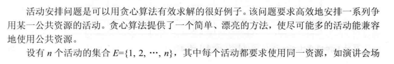
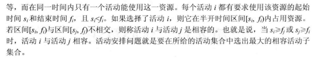
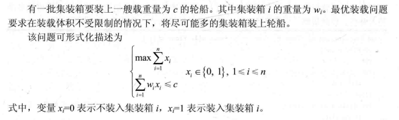
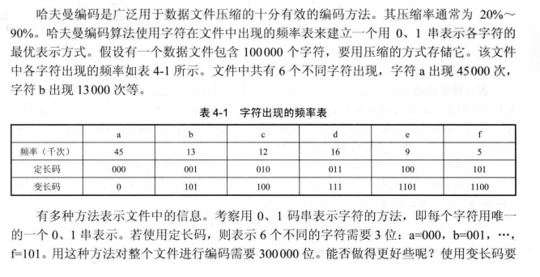
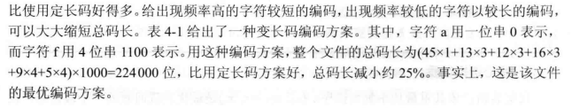
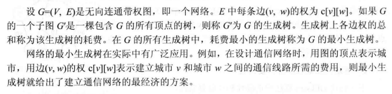

算法分析与设计编程题 贪心算法
活动安排问题
题目描述


解题代码
1 | vector<bool> greedySelector(vector<vector<int>>& intervals) { |
最优装载
题目描述

解题代码
1 | vector<bool> optimisedLoading(vector<int>& weight, int c) { |
哈夫曼编码
题目描述


解题代码
1 | struct HuffmanNode { |
单源最短路径
题目描述
解题代码
图的定义
1 | struct MGraph { |
BellmanFord
此算法可适用于含有负权值边的图。
1 | // G:图 start:源点 dist:最短路径 |
Dijkstra
本算法仅适用于所有边的权值均为正的图。
1 | // G:图 start:源点 dist:最短路径 |
最小生成树
题目描述

解题代码
Kruskal
1 | void Kruskal(MGraph& G) { |
Prim
1 | void Prim(MGraph& G) { |
本博客所有文章除特别声明外，均采用 CC BY-NC-SA 4.0 许可协议。转载请注明来源 PageFault！
 微信
微信 支付宝
支付宝
相关推荐

2023-02-26
LeetCode周赛总结 第334场
左右元素和的差值题目链接左右元素和的差值 解题思路直接按照题目要求模拟即可，两次遍历求出 leftSum 和 rightSum，再计算得出 answer. 解题代码12345678910111213141516171819class Solution {public: vector<int> leftRigthDifference(vector<int>& nums) { int n = nums.size(); vector<int> leftSum(n, 0); for (int i = 0; i < n - 1; ++i) { leftSum[i + 1] = leftSum[i] + nums[i]; } vector<int> rightSum(n, 0); for (int i = n - 1; i > 0; --i) { ...

2023-08-28
算法分析与设计编程题 动态规划
矩阵连乘题目描述 解题代码12345678910111213141516171819202122232425262728293031323334353637void printOptimalParens(vector<vector<int>>& partition, int i, int j) { if (i == j) cout << "A" << i; // 单个矩阵，无需划分 else { cout << "("; printOptimalParens(partition, i, partition[i][j]); printOptimalParens(partition, partition[i][j] + 1, j); cout << ")"; }}// nums[i]: nums[0]为矩阵A1的行数，nums[i](i >= 1)表示矩阵Ai的列数// 如输入为 nums ...

2023-01-08
LeetCode周赛总结 第327场
由于考研等因素的影响，已经时隔一年没有参加力扣周赛了，长时间没有好好琢磨算法题，思维敏捷度确实有所下降，好在这次周赛前两题都没有什么难度，但第三题却把简单问题想复杂了，第四题就基本上都没怎么读题了。。。 正整数和负整数的最大计数题目链接正整数和负整数的最大计数 解题思路直接依照题意统计该数组中正整数和负整数的个数，然后返回较大个数即可，送分题。 解题代码123456789101112131415class Solution {public: int maximumCount(vector<int>& nums) { int cnt1 = 0, cnt2 = 0; for (int i = 0; i < nums.size(); ++i) { if (nums[i] > 0) { ++cnt1; } else if (nums[i] < 0) { ...

2022-01-16
LeetCode周赛总结 第276场
本次周赛相对比较简单，前三题花的时间比较短，但无奈最后一题还是没思路。。。 将字符串拆分成若干长度为 k 的组题目链接将字符串拆分成若干长度为 k 的组 解题思路遍历字符串 s 的每个字符并加入到一个临时字符串中，当此临时字符串长度为 k 时，加入到结果数组中并清空此字符串。若此时遍历到字符串的最后一个字符且此时临时字符串长度没有达到 k 时，则向其末尾填入字符 fill 直到临时字符串长度达到 k，再加入到结果数组中。 解题代码123456789101112131415161718192021class Solution {public: vector<string> divideString(string s, int k, char fill) { vector<string> res; string newStr; for (int i = 0; i < s.size(); i++) { newStr += s[i]; i...

2023-07-10
数据结构编程题 链表
链表定义以下为本文解题代码的链表定义。 12345struct ListNode { int val; ListNode* next; ListNode(int val = 0, ListNode* next = nullptr) : val(val), next(next) {}}; 递归删除结点题目描述设计一个递归算法，删除不带头结点的单链表 L 中的所有值为 x 的结点，并返回新的链表头节点。 解题代码123456789101112ListNode* deleteNodeRecur(ListNode* head, int x) { if (head == nullptr) return head; head->next = deleteNodeRecur(head->next, x); if (head->val == x) { ListNode* nextNode = head->next; delete head; ...

2023-08-15
数据结构编程题 图
图定义邻接表1234567891011121314struct ArcNode { // 边结点 int verIdx, weight; ArcNode* next; ArcNode(int verIdx, int weight, ArcNode* next) : verIdx(verIdx), weight(weight), next(next) {}};struct VNode { // 顶点结点 char vertex; ArcNode* first;};struct AlGraph { vector<VNode> VNodes;}; 邻接矩阵1234struct MGraph { vector<char> vertices; // 顶点集 vector<vector<int>> edges; // 邻接矩阵}; 邻接表转邻接矩阵题目描述写出从图的邻接表转化为邻接矩阵的算法。 解题代码1234567891011121314151...